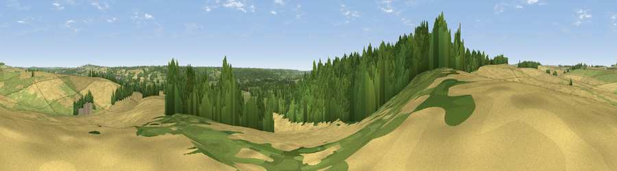

Viewpoint near Breamore
#35826 in England · top 51% of its area beats it · near BreamoreWhere it is
The exact computed spot (SU 15175 19825). Click the marker for map links.
The view, rendered

A 360° render of this exact spot computed from the terrain model, tree cover and land cover — summer colours, afternoon light, calibrated against photographs of famous viewpoints. Real trees, hedges and buildings will differ in detail.
The panorama
Grey silhouette: terrain skyline in each direction (720 bearings, Earth curvature and refraction included). Dashed green: skyline with trees (+15 m) and buildings (+8 m) as obstacles. Blue strip: how far the ground is visible on each bearing.
Where the view opens
Wedge length = distance to the farthest visible ground on that bearing (vegetation-aware). Rings at 10, 25 and 50 km.
What fills the view
43% cropland · 32% woodland · 25% grassland
Angular shares of the visible panorama (visual magnitude), not map area. Landscape diversity 0.48 (0–1 Shannon).
Key numbers
More beautiful places nearby
The staircase of upgrades: each row has a higher view potential than everything closer. Driving times are estimates from straight-line distance, calibrated against real road routing — check an actual route before setting out.
| Place | Direction | Drive | Score |
|---|---|---|---|
| Clearbury Down | N · 5 km | ~11 min | 43.8 |
| Viewpoint near West Grimstead | NE · 7 km | ~14 min | 50.6 |
| Viewpoint near West Grimstead | NE · 7 km | ~15 min | 54.6 |
| Viewpoint near Martin | W · 11 km | ~21 min | 58.4 |
| Viewpoint near Martin | WSW · 11 km | ~21 min | 64.6 |
| Viewpoint near Cranborne | WSW · 12 km | ~22 min | 65.0 |
| Trow Down | W · 18 km | ~31 min | 67.5 |
| Monk's Down | W · 22 km | ~36 min | 74.4 |
50.97764, -1.78522 · source: screening · position refined by local search. Computed location — check access rights before visiting.